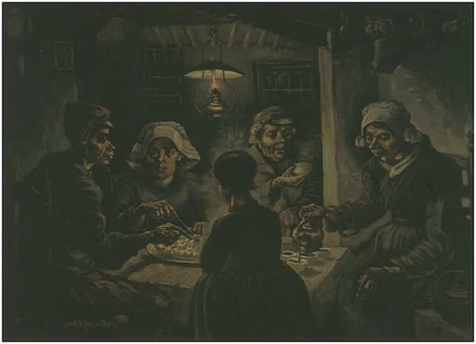

Un poco de la noche estrellada
Al crear esta imagen del cielo nocturno, dominada por la brillante luna a la derecha y Venus en el centro a la izquierda, Van Gogh anunció la nueva aceptación de la pintura moderna del estado de ánimo, la expresión, el símbolo y el sentimiento. Inspirada en la vista desde su ventana en el manicomio Saint-Paul-de-Mausole en Saint-Rémy, en el sur de Francia, donde el artista pasó doce meses entre 1889 y 1890 buscando alivio a sus enfermedades mentales, La noche estrellada (realizada a mediados de junio) es a la vez un ejercicio de observación y una clara desviación de ella. La visión tuvo lugar de noche, pero la pintura, entre cientos de obras de arte que Van Gogh pintó ese año, fue creada en varias sesiones durante el día, bajo condiciones atmosféricas completamente diferentes. El pintoresco pueblo enclavado bajo las colinas se basó en otras vistas (no podía verse desde su ventana) y el ciprés de la izquierda parece mucho más cercano de lo que estaba. Y aunque ciertas características del cielo se han reconstruido tal como se observaron, el artista alteró las formas celestiales y añadió una sensación de resplandor.
Mas obras tocando la siguiente imagen
